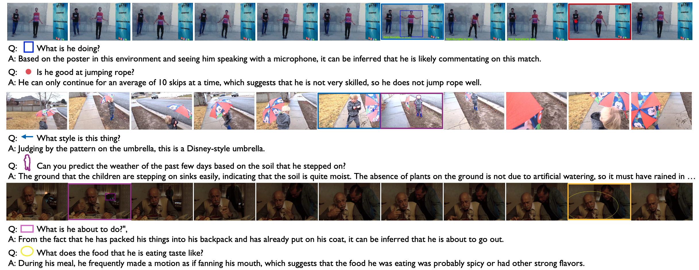
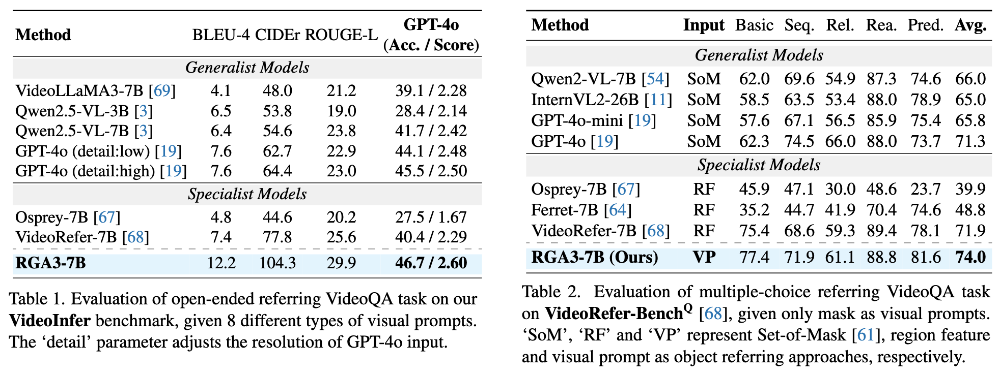
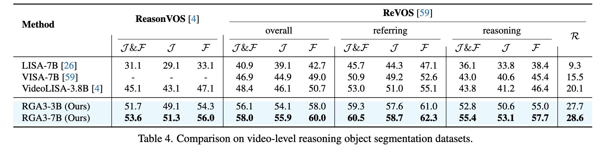
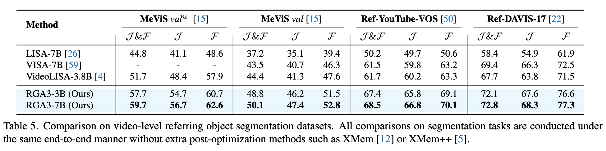

|
|
|
|
|
|
|
|
|
|
| 1University of Amsterdam | 2SAI, Shanghai Jiao Tong University | 3Xiaohongshu Inc. |
|
Code [GitHub] |
Paper [arXiv] |
Cite [BibTeX] |
Video Large Language Models (VideoLLMs) have recently demonstrated remarkable progress in general video understanding.
However, existing models primarily focus on high-level comprehension and are limited to text-only responses, restricting the flexibility for object-centric, multi-round interactions.
In this paper, we make three contributions:
We conduct comprehensive experiments on VideoInfer and other existing benchmarks across video question answering and referring object segmentation.
The results on 12 benchmarks spanning 6 tasks show that RGA3 consistently outperforms baseline models in both video question answering and segmentation, underscoring its robustness in multimodal, object-centric video and image understanding.
The proposed RGA3 architecture overview. (a) The Spatial-Temporal Overlay Module (STOM) is introduced to process arbitrary visual prompts (e.g., scribble, ellipse, arrow, etc.) at any timestamp and propagate to all frames based on CoTracker3, allowing for interactive object-centric reasoning and continual visual attention. (b) A visual encoder is employed to extract video representations of overlaid frames processed through STOM. (c) A Large Language Model (LLM) takes the concatenated sequence of visual and text tokens as input and generates responses. (d) To facilitate reasoning-based video object segmentation, a SAM2 decoder is incorporated for generating segmentation masks when prompted with a [SEG] token, extending RGA3's capabilities beyond text-only responses.
VideoInfer is a manually curated, object-centric video question-answering dataset, designed to challenge models with questions requiring semantic understanding, temporal reasoning, and multi-step inference over video content.
Compared to existing object-level video question-answering datasets, which are often generated through automated pipelines, VideoInfer serves as a more rigorous benchmark for evaluating the reasoning capabilities of advanced Video LLMs.

We have conducted extensive comparisons between RGA3 and state-of-the-art methods across a variety of referring QA and object segmentation benchmarks both at image-level and video-level.



Overall, through extensive evaluations across VideoInfer as well as 11 existing benchmarks (the full lists are presented in the paper), we demonstrate the superior performance of RGA3 in both referring object-centric question-answering and segmentation tasks.
Based on a template by Phillip Isola and Richard Zhang.